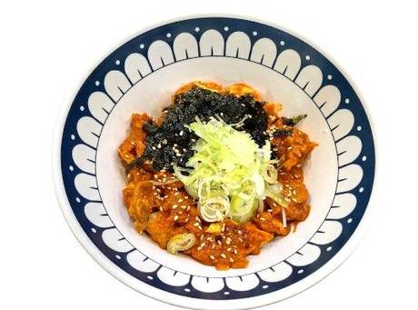
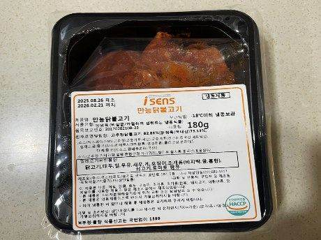
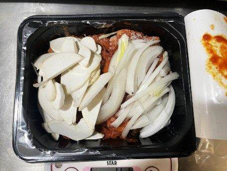
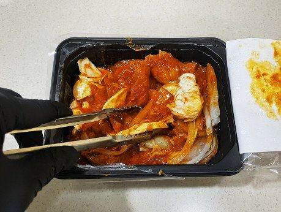
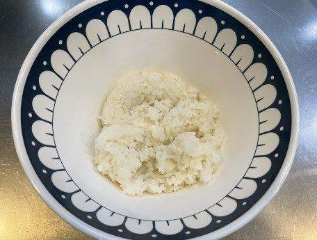
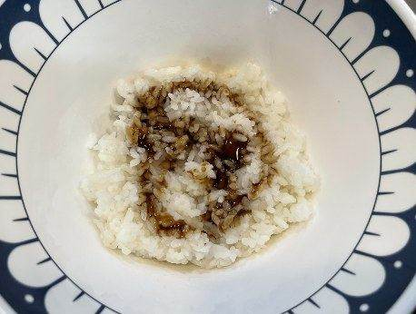
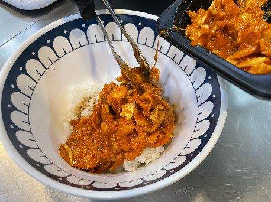
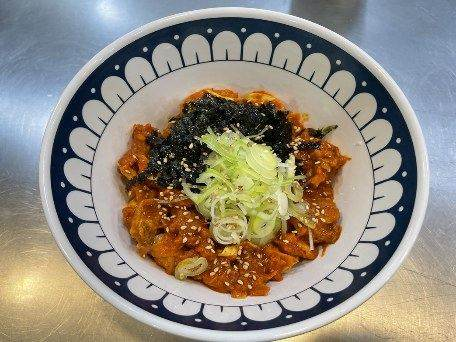
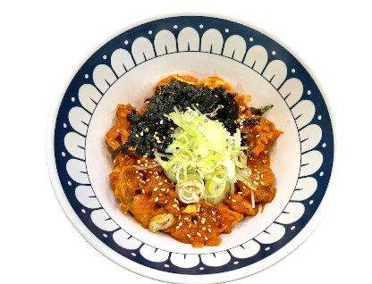

| 메뉴명 | 춘천 닭갈비덮밥 |
|---|---|
| 판매가격 | 8,900원 |
| 원재료 | 만능닭불고기, 새송이, 양파, 밥, 달큰간장소스, 대파, 김가루, 깨, 쌈무김치, 우동국물 |
| 사용 부자재 | 라면용기, 소스볼, 우동국물 용기 |
| 메뉴특징 | 매콤한 닭갈비의 풍미를 제대로 담아낸 든든한 덮밥 메뉴 |
조리방법

1
냉동 아이센스 만능 닭불고기 제품의 실링 3면을 개봉한다.
(※완전히 뜯지 않기!)
냉동 아이센스 만능 닭불고기 제품의 실링 3면을 개봉한다.
(※완전히 뜯지 않기!)

2
양파슬라이스 20g, 미니새송이 20g을 계량하여 넣어준다.
양파슬라이스 20g, 미니새송이 20g을 계량하여 넣어준다.

3
700W전자레인지에서 3분간 돌려준다.
(*상황에 따라 가운데가 차가울 경우, 30초 더 돌려주기)
700W전자레인지에서 3분간 돌려준다.
(*상황에 따라 가운데가 차가울 경우, 30초 더 돌려주기)

4
데워진 닭갈비 윗면 포장을 뜯어 채소와 닭갈비를 골고루 섞어준다. (※화상 주의!)
데워진 닭갈비 윗면 포장을 뜯어 채소와 닭갈비를 골고루 섞어준다. (※화상 주의!)

5
라면용기에 밥 200g을 담아준다.
라면용기에 밥 200g을 담아준다.

6
달큰간장소스 1T(25g)을 밥 위에 뿌려서 밥에 간을 해준다.
달큰간장소스 1T(25g)을 밥 위에 뿌려서 밥에 간을 해준다.

7
밥 위에 닭갈비를 올려준다.
밥 위에 닭갈비를 올려준다.

8
김가루 3g, 대파 20g, 깨 1g을 토핑하고, 참기름 3g을 뿌려 완성한다.
김가루 3g, 대파 20g, 깨 1g을 토핑하고, 참기름 3g을 뿌려 완성한다.

9
소스볼에 쌈무김치 50g을 담고, 우동장국과 함께 제공한다.
소스볼에 쌈무김치 50g을 담고, 우동장국과 함께 제공한다.